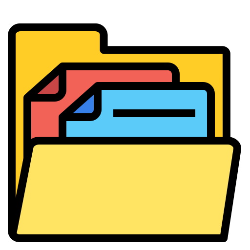

PT.Sumitomo Electric Wintec Indonesia
Quality Database System
 Menu Utama
Search by Folder
Search by QDB
Search Excel File
Passline Barcode
Photo Upload
About Me
Selamat Datang di Quality Database System
Pilih menu di sebelah kiri untuk memulai.